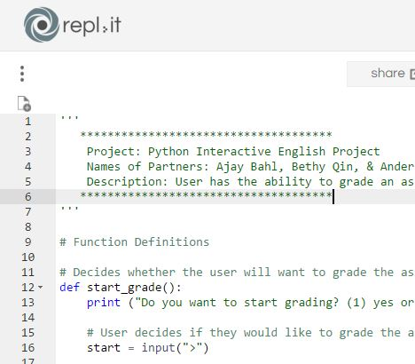

Projects
This is my first Scratch orject!
Story project! Fun and interactive story coded with Scratch! Special thanks to Kelly Chou for being an amazing partner!
 Flowchart
In this project, we coded a program that makes users have the ability to grade an assignment regarding "How to Read Literature Like a Professor"!
Partners: Ajay Bahl and Anderson Wu.
In this project, we used python to code a simple game. In this game, players are initially trapped in a cube, and he or she will need to choose from various options to try to escape from the cube.
Partner: Brandon Lim